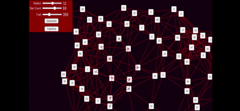

This project was my star map project which was used to showcase my ability to use maths in programming as not only could this project generate a star map dynamically but also had user input to allow users to tweak this but also this project had pathfinding within it as you could select two points on the map and it would show you the quickest route for the space ship to travel. Additionally, the user had constraints for this that they could tweak such as fuel which if they didn't have enough of it to make the journey it would showcase this to the user.